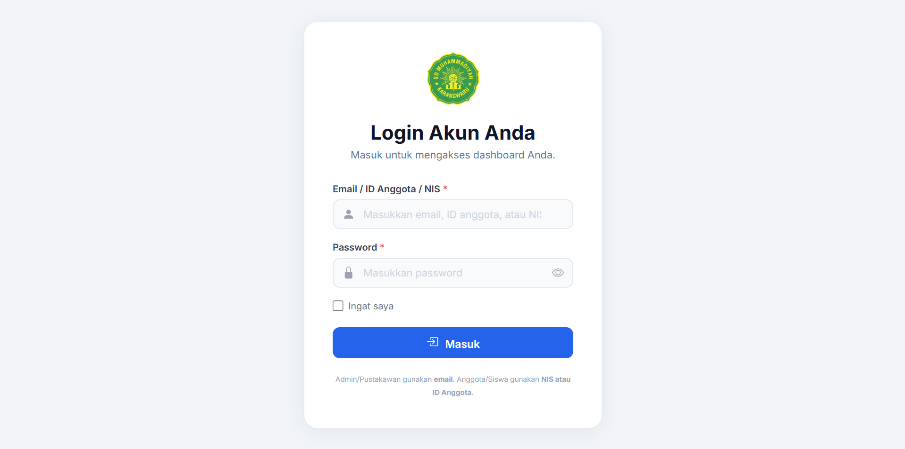

TENTANG SAYA
Saya adalah lulusan S1 Sistem Informasi dari Universitas Teknologi Yogyakarta (UTY) angkatan 2026. Selama masa studi, fokus utama saya adalah menjembatani kebutuhan proses bisnis nyata ke dalam perancangan arsitektur sistem digital yang rapi, mulai dari diagram alur, desain entitas database (ERD & Normalisasi), hingga pembuatan aplikasi web fungsional.
Untuk tugas akhir skripsi, saya merancang dan mengimplementasikan Sistem Informasi Perpustakaan Web berbasis Laravel & MySQL untuk mendigitalkan pencatatan manual, denda keterlambatan, katalog buku, serta pengujian sistem menggunakan metode Black Box Testing.
Selain bidang teknis, saya memiliki rekam jejak kepemimpinan dan operasional di dunia nyata. Saya pernah dipercaya sebagai Ketua Pelaksana Smart Competition 2024 yang memimpin koordinasi lintas divisi kepanitiaan. Saya juga terbiasa dengan ketelitian pencatatan kas, pelayanan pelanggan, dan manajemen stok melalui pengalaman wirausaha mandiri serta pengelolaan operasional rental game.
Saat ini saya siap berkontribusi pada posisi Entry-Level / Junior Web Developer, System / Database Analyst, atau IT Support & Operations.
PENGALAMAN
-
2024 Ketua Pelaksana · Smart Competition 2024 Himpunan Mahasiswa / Organisasi Kampus UTY
Memimpin dan mengorkestrasi panitia dari 5 divisi (acara, logistik, publikasi, pendaftaran, dan konsumsi) dalam menyelenggarakan kompetisi akademik. Bertanggung jawab atas timeline kerja, evaluasi harian, pengelolaan anggaran kegiatan, serta mitigasi kendala teknis hingga acara berjalan sukses.
-
2022 — 2026 Founder & Pengelola · Wirausaha Mandiri Penjualan Aplikasi Digital, Perangkat Smartphone, & F&B
Menjalankan usaha perdagangan mandiri secara end-to-end: riset supplier terpercaya, manajemen interaksi pelanggan melalui WhatsApp & medsos, penanganan keluhan, serta pencatatan pembukuan arus kas (inflow/outflow) dan keuntungan bulanan menggunakan spreadsheet secara rapi dan terukur.
-
2024 Pengelola Operasional & Kasir · Rental PlayStation Operasional Harian & Pelayanan
Bertanggung jawab terhadap operasional rental harian: pencatatan akurat durasi sewa, kalkulasi tagihan pelanggan, pemeliharaan hardware konsol dan perangkat pendukung, serta penyusunan laporan rekonsiliasi kas tunai dan digital setiap pergantian shift kerja.
-
2024 Panitia Pelaksana · Seminar Keamanan Siber & Workshop Web Dev Fakultas Sains & Teknologi UTY
Memfasilitasi kebutuhan teknis laboratorium komputer, penyiapan modul praktikum web development bagi puluhan peserta, dan mendukung kelancaran pemaparan materi dari narasumber profesional.
PROYEK
-

1 FotoSistem Informasi Perpustakaan Web
Sistem informasi berbasis web yang dibangun untuk mengotomatisasi pengelolaan sirkulasi buku pada perpustakaan. Dilengkapi modul manajemen katalog buku, registrasi anggota, peminjaman & pengembalian otomatis, kalkulasi denda harian, dan cetak laporan sirkulasi. Diuji secara menyeluruh dengan metode Black Box Testing.
-
 3 Foto
3 Foto
Omahku Hostel & Private Tour Website
Platform web hospitality & tour guide di Yogyakarta. Menyajikan informasi kamar, galeri fasilitas akomodasi, paket itinerary private tour ke berbagai destinasi wisata, serta integrasi tombol pemesanan langsung terhubung ke WhatsApp customer care.
-
.png) 7 Foto
7 Foto
Sistem Informasi POS Kasir UMKM
Aplikasi kasir Point of Sale (POS) berbasis web ringan untuk membantu pencatatan transaksi pesanan pada UMKM kedai kopi "Buk Win". Fitur utama meliputi kalkulasi total otomatis pesanan meja, riwayat penjualan, dan rekapitulasi omzet harian.
SKILLS & PENDIDIKAN
Sarjana (S1) Sistem Informasi
Universitas Teknologi Yogyakarta (UTY)
Fokus pembelajaran mencakup Analisis & Perancangan Sistem Informasi (APSI), Manajemen Basis Data Relasional, Rekayasa Perangkat Lunak (RPL), dan Pemrograman Web.
Database & Backend
Frontend & Web
Metodologi & Tools
Soft Skills & Operasional
KONTAK
Mari Terhubung & Berkolaborasi
Saya terbuka untuk diskusi peluang kerja entry-level, wawancara, proyek lepas, maupun sekadar bertukar pikiran seputar teknologi dan sistem informasi.